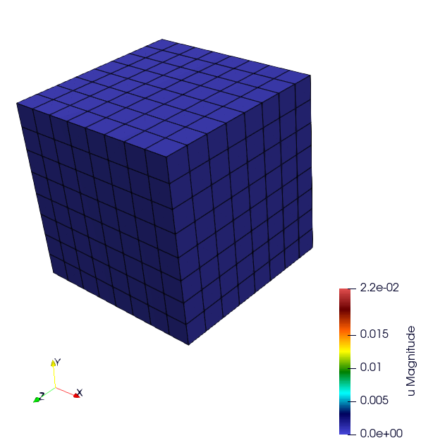
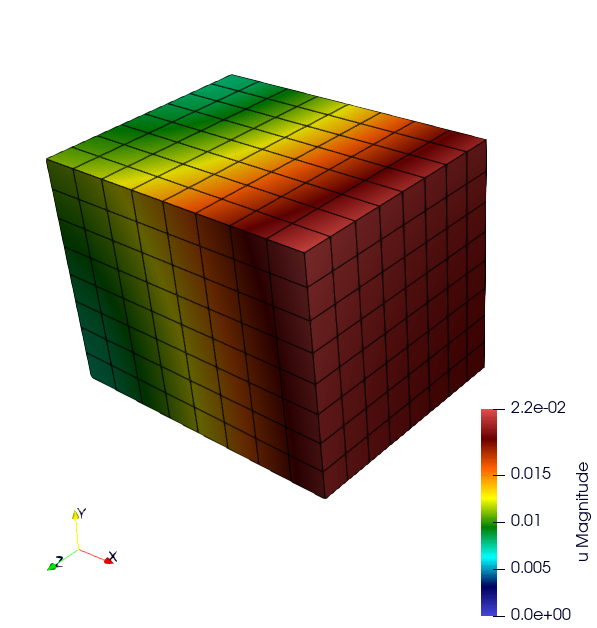
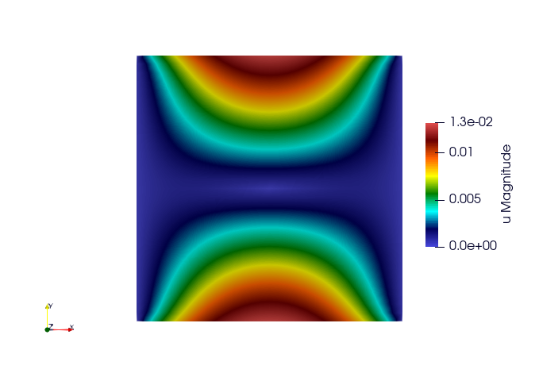
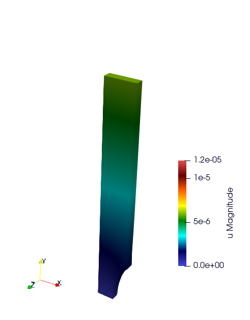
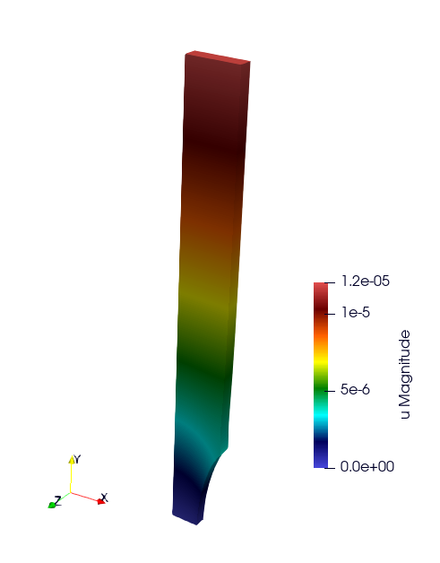

Basic Tests
TensileTest
website : https://github.com/latug0/mfem-mgis-examples/tree/master/ex1
The sources of this example live in mfem-mgis, in
tests/UniaxialTensileTest.cxx. They are installed in
share/mfem-mgis/examples/ex1.
Description:
This example is a cyclic tension-compression test on a unit cube. The
imposed axial strain goes up to 0.9 %, down to -2.1 % and back up to
1.9 %, in 100 time steps. Its test compares the results to the reference
file IsotropicLinearHardeningPlasticity.ref.


Problem Solved
Plastic behaviour with linear isotropic hardening,
IsotropicLinearHardeningPlasticity.mfront :
[ parameters , material ]
[ Young Modulus , 70e9 ];
[ Poisson Ratio , 0.34 ];
[ Yield Stress , 300e6 ];
[ Hardening Slope , 10e9 ];
Boundary conditions:
- symmetry on the faces x = 0, y = 0 and z = 0
- imposed displacement along x on the face x = 1
Solver : CGSolver
Element:
- Family H1
- Order 1
Run This Simulation
Without any option, the example runs as described above. The
--reference-file option compares the results to the reference file:
./uniaxial_tensile_test
mpirun -n 2 ./uniaxial_tensile_test
./uniaxial_tensile_test --reference-file IsotropicLinearHardeningPlasticity.ref
Available options
Command line |
Description |
Default |
|---|---|---|
|
Mesh file |
cube.mesh |
|
Material library |
src/libBehaviour.so |
|
Name of the behaviour |
IsotropicLinearHardeningPlasticity |
|
Internal state variable saved and compared to the reference file, none if empty |
EquivalentPlasticStrain |
|
Reference file |
no comparison |
|
Finite element order |
1 |
|
Number of uniform refinements of the mesh |
0 |
|
Number of time steps. The reference file must have been computed with the same number of time steps. |
100 |
|
Linear solver: GMRESSolver, CGSolver, UMFPackSolver, MUMPSSolver, HypreFGMRES, HyprePCG or HypreGMRES. UMFPackSolver is sequential only. MUMPSSolver and the hypre solvers are parallel only. HypreFGMRES uses the HypreILU preconditioner. HyprePCG uses the HypreDiagScale preconditioner. |
CGSolver |
|
Run in parallel or not |
parallel if MFEM is built with MPI |
|
Export or not the results to Paraview |
export |
TwoLayerCube
website: https://github.com/latug0/mfem-mgis-examples/tree/master/ex3
The sources of this example live in mfem-mgis, in tests/TwoLayerCube.cxx.
They are installed in share/mfem-mgis/examples/ex3.
Description:
Periodic unit cube made of two elastic layers. A macroscopic strain is imposed. The solution is compared to the analytical one.
Problem solved
The layers are split at x = 0.5. Material 1 fills x < 0.5. Material 2
fills x > 0.5.
One component of the macroscopic strain is imposed:
Exx -> 0, Eyy -> 1, Ezz -> 2, Exy -> 3, Exz -> 4, Eyz -> 5.
Its value is 1 for a normal component. It is √2/2 for a shear
component, in Mandel notation.
Solver : CGSolver
Elastic behaviour parameters, IsotropicLinearElasticity.mfront :
[ parameters , material 1 , material 2 ]
[ First Lame Coefficient , 100 , 200 ];
[ Shear Modulus , 75 , 150 ];
Element:
- Family H1
- Order 1
Run the simulation
The first command runs the default case Eyy. The second one runs the case Exy on 4 processes:
./two_layer_cube
mpirun -n 4 ./two_layer_cube --test-case 3
The mesh cube_2mat_per.mesh has 4x4x4 hexahedra. The mesh Box.med
has 8x8x8 hexahedra. Its periodicity is described by Box.per. Reading it
requires MFEM built with MED support:
./two_layer_cube --mesh Box.med
Available options
Command line |
Description |
Default |
|---|---|---|
|
Mesh file |
cube_2mat_per.mesh |
|
Material library |
src/libBehaviour.so |
|
Finite element order |
1 |
|
Number of uniform refinements of the mesh |
0 |
|
Coordinates of the upper corner of the cube. They must match the mesh. |
1 |
|
Imposed component of the strain, from 0 to 5 |
1 |
|
Linear solver: GMRESSolver, CGSolver, UMFPackSolver, MUMPSSolver, HypreFGMRES, HyprePCG or HypreGMRES. UMFPackSolver is sequential only. MUMPSSolver and the hypre solvers are parallel only. HypreFGMRES uses the HypreILU preconditioner. HyprePCG uses the HypreDiagScale preconditioner. |
CGSolver |
|
Run in parallel or not |
parallel |
|
Compare or not the solution to the analytical one. It is only valid for the provided meshes. |
compare |
Satoh
website: https://github.com/latug0/mfem-mgis-examples/tree/master/ex5
Description:
Plate of length 1 in plane strain, clamped on its left and right boundaries. A parabolic temperature profile is imposed along the x-axis.

Problem solved
This test models a 2D plate of length 1 in plane strain clamped on the left
and right boundaries and subjected to a parabolic temperature profile along
the x-axis:
- the temperature is 293.15 K on the left and right boundaries
- the temperature is 2000 K for x = 0.5
This example shows how to define an external state variable using an
analytical profile.
Solver : UMFPackSolver
Preconditioner : None
Thermoelastic behavior law parameters :
[ parameters , material ]
[ Young Modulus , 150e9 ];
[ Poisson Ratio , 0.3 ];
[ Thermal Expansion , 1e-5 ];
[ Reference Temperature , 293.15 ];
Element:
- Family H1
- Order 2
Run the simulation
Parameters are hardcoded in this example.
./satoh
Note
The example runs sequentially. A parallel run needs parallel set to
true in the source code and a parallel linear solver.
Ssna303 Example (2D and 3D)
website 2D example: https://github.com/latug0/mfem-mgis-examples/tree/master/ex2
website 3D example: https://github.com/latug0/mfem-mgis-examples/tree/master/ex4
Description:
Tensile test on a notched beam with a finite-strain plastic behaviour. The 2D example ex2 is in plane strain. The tutorial describes it. The 3D example ex4 is described below.


Problem solved in 3D
The mesh ssna303_3d.msh is made of hexahedra. Lengths are in meters.
The mesh is 1.5e-3 thick.
Plastic behaviour with linear isotropic hardening,
IsotropicLinearHardeningPlasticity.mfront :
[ parameters , material ]
[ Young Modulus , 70e9 ];
[ Poisson Ratio , 0.34 ];
[ Yield Stress , 300e6 ];
[ Hardening Slope , 10e9 ];
Boundary conditions:
- uy = 0 on the lower boundary y = 0
- ux = 0 on the symmetry plane x = 0
- uz = 0 on the symmetry plane z = 0
- uy = 6e-3 * t on the upper boundary y = 0.03
Time: 50 steps from t = 0 to t = 1
Element:
- Family H1
- Order 1
Run the 3D simulation
Three executables solve this problem with different linear solvers:
ssna303_3d_mumpsuses MUMPS in parallel and UMFPack sequentially. It requires MFEM built with MUMPS. It also offers the FBar formulation.ssna303_3d_hypreuses the FGMRES solver of hypre with the BoomerAMG preconditioner.ssna303_3d_petscuses PETSc with the configuration filerc_ex10p. It requires MFEM built with PETSc.
mpirun -n 4 ./ssna303_3d_mumps
mpirun -n 4 ./ssna303_3d_hypre
mpirun -n 4 ./ssna303_3d_petsc
Available options
Command line |
Description |
Default |
|---|---|---|
|
Finite element order |
1 |
|
Number of time steps |
50 |
|
End time. The displacement of the upper boundary is 6e-3 * t. |
1 |
|
Reference values of the resultant force on the upper boundary |
no comparison |
|
Use or not the FBar formulation.
It requires MGIS built with TFEL.
Only for |
no FBar |
|
Reference values computed without
FBar, compared with a larger
tolerance. Only for
|
no comparison |
|
Run in parallel with MUMPS or
sequentially with UMFPack. Only
for |
parallel |
|
Linear solver. Only for
|
HypreFGMRES |
|
Preconditioner of the linear
solver. Only for
|
HypreBoomerAMG |
|
Number of uniform refinements of
the mesh. Not for
|
0 |
|
Use PETSc with the given
configuration file. It requires
MFEM built with PETSc. Not for
|
|
Tests
In the full test mode, ssna303_3d_mumps and ssna303_3d_hypre compute
the whole loading in 10 time steps. In the restricted test mode, they only
compute the first time step, up to 0.1. The resultant force is compared to
ssna303_3d-force-10steps.ref.
The test ssna303_3d_mumps-fbar does the same with FBar. It compares the
resultant force to ssna303_3d-force-10steps-fbar.ref, and to the reference
values without FBar with a larger tolerance.
The test ssna303_3d_petsc always computes one time step up to 0.02. It
compares the resultant force to ssna303_3d-force-1step.ref.